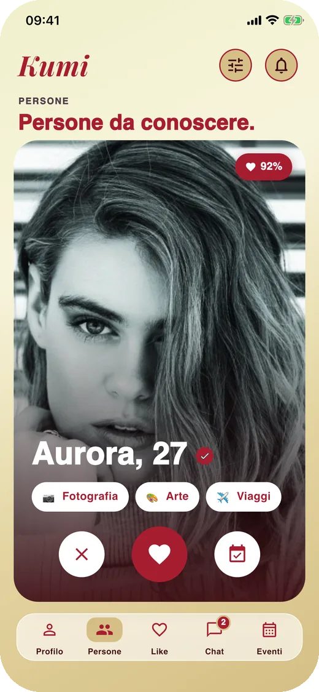
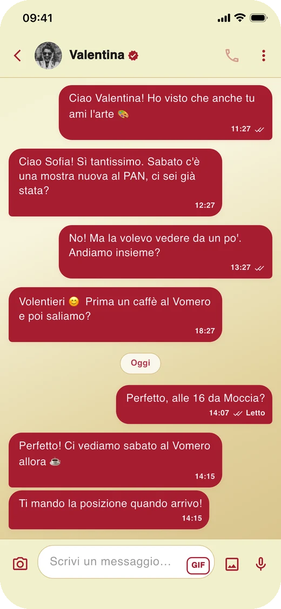
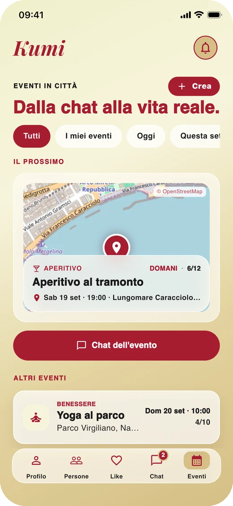
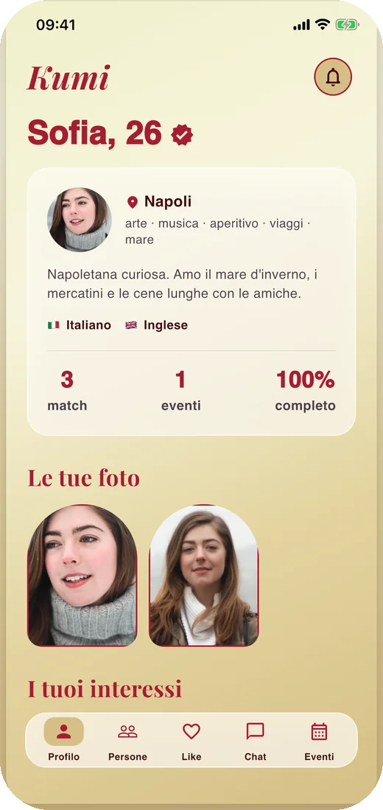

Amicizie tra donne, nella tua città
Dalla chat
Dalla chat
alla vita reale.
Kumi ti fa conoscere donne con i tuoi stessi interessi. Vi scrivete, vi organizzate e vi vedete davvero: un caffè, una mostra, un aperitivo.
Presto suApp Store
Presto suGoogle Play
In arrivo su iPhone e Android.

Come funziona
Quattro schermate. Nessun giro di parole.



Una cosa chiara
Non è un'app di incontri.
Kumi è per le amicizie. Ci si iscrive per conoscere donne con cui fare cose, non per trovare un partner. Chi cerca altro, qui non ha spazio.
La gattina la incontrerai in giro per l'app.
Sicurezza
Uno spazio per sole donne, protetto sul serio.
-
Verifica con un selfieIl selfie lo guarda una persona del team, non un algoritmo. Senza spunta non si vedono luogo e orario degli eventi.
-
Blocca e segnalaChi blocchi sparisce da entrambe le parti, chat compresa. Tre segnalazioni e l'account viene sospeso.
-
I tuoi dati restano tuoiCognome e data di nascita non li vede nessuna. L'account si elimina in un tocco, con tutto quello che contiene.
Kumi arriva presto.
Su App Store e Google Play. Per domande, idee o collaborazioni: info@kumiapp.space